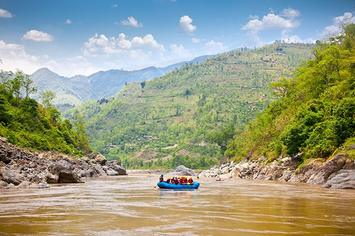

Splash Rafting Trip Offerings
Make your Splash!

What splash trip will you choose?
St. Raven River

Otter Creek

Bear Pass River

| Trip type | Sites | Information |
|---|---|---|
Rafting |
|
A 2-4 hour rafting adventure with sightseeing and thrills. Guided by professionals to ensure safety and fun. |
Camping |
|
Flat camping sites to set up tents and provided fire pits for cooking for 2-3 day lodging. |
Hiking |
|
Gentle hikes to provide recreation and leisure. Enjoy stunning views and landscapes. Trails maintained to be safe for you to bike or hike. |